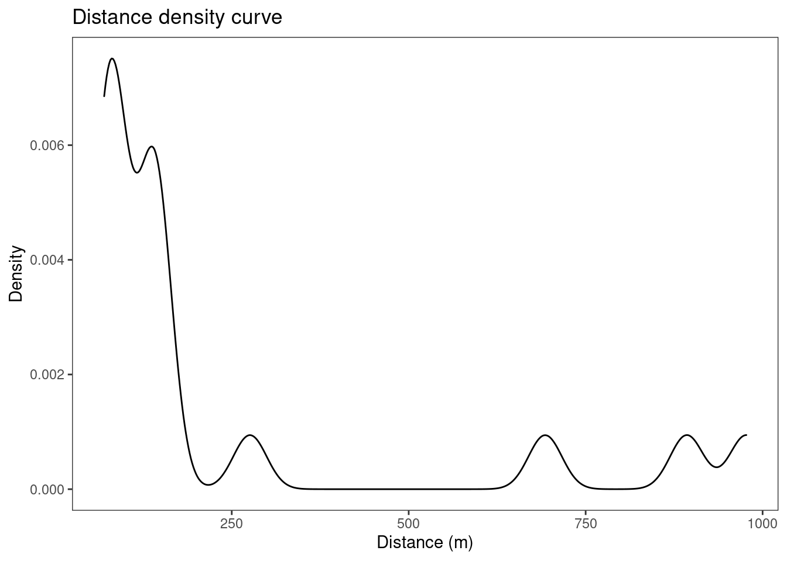

Le TD va se dérouler en 4 temps :
1 - Créer un point spatialisé afin de localiser au cœur de la ville de Rouen
2 - Requêter OSM pour extraire les données d’intérêt (bars, restaurants, magasins, …)
3 - Réaliser une zone tampon puis identifier les lieux les plus proches de vous
4 - Produire une statistique sur la distribution spatiales de ces derniers
